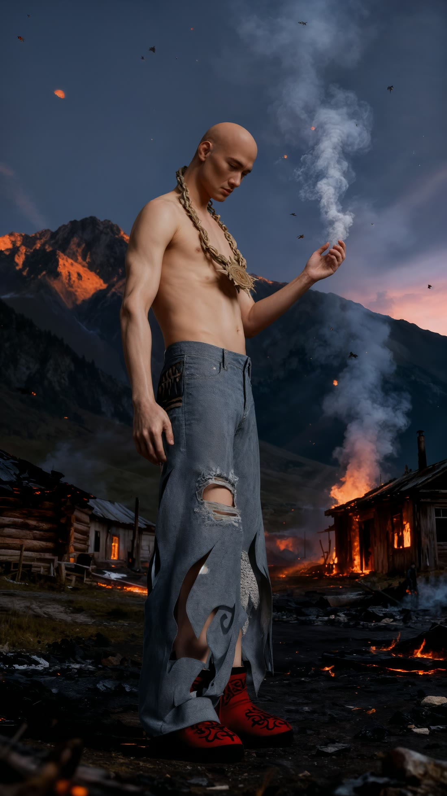
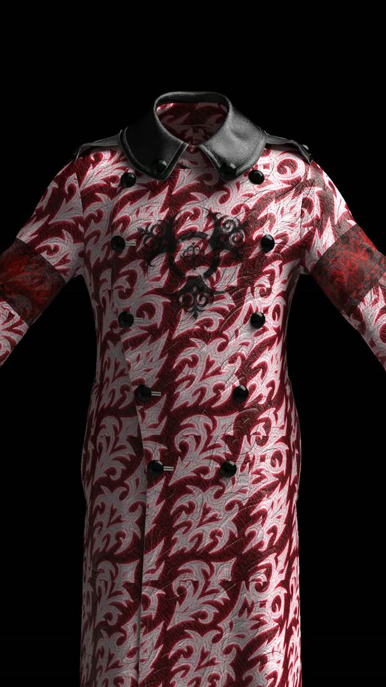
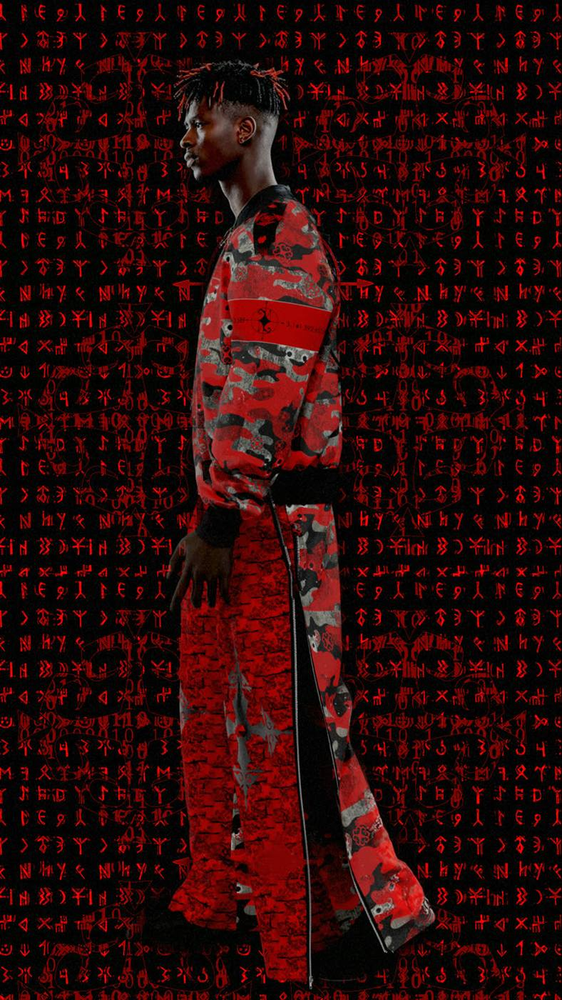
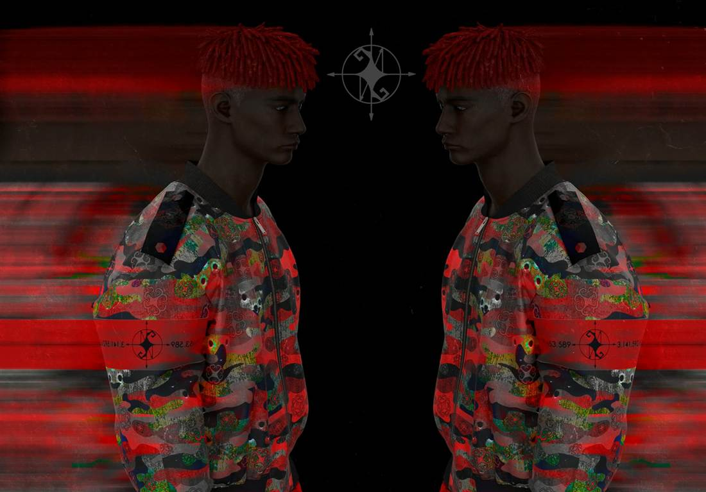
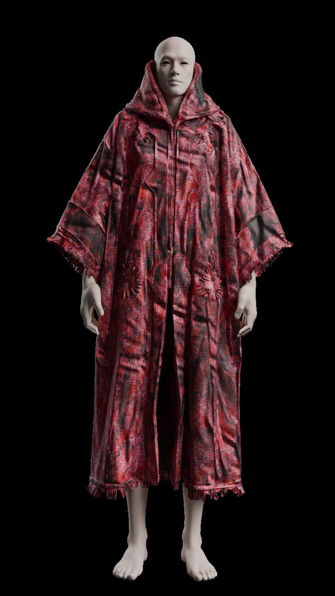
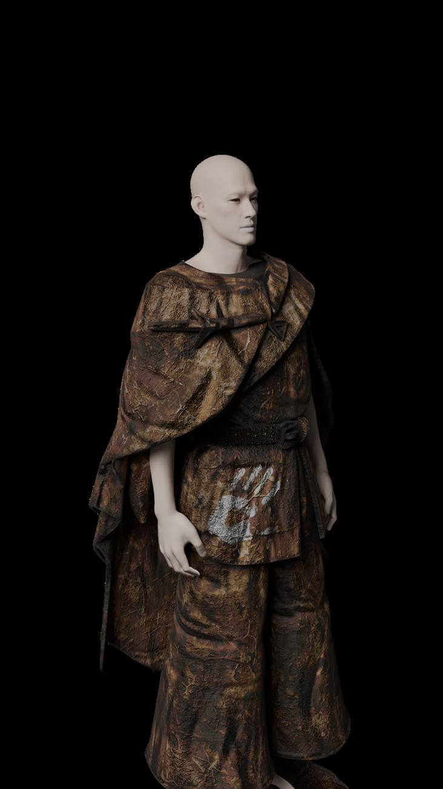

01
Digital atelier — 3D · UE5
3due5ai assist
Garments that were never sewn but hang correctly. Cut and simulated in CLO3D and Marvelous Designer, detailed in Blender, staged in Unreal Engine 5 — burning villages, real-time light — with AI used where it sharpens the image, never instead of the cut.
- stack
- CLO3D · Marvelous · Blender · UE5
- output
- look films · turntables · stills
- films
- N°01 look film · N°02 turntable
FILM 02 · TURNTABLE · CLO3D · AUTO
TOTEMISM · LOOK 3 · DIGITAL GARMENT FILM · 3D × AI

UE5 · REAL-TIME SCENE
CLO3D · JACQUARD COAT
3D LOOK · RUNIC WALL
RENDER POSTER · MIRROR PASS · 3D
MOOD LOOP · AUTO

CLO3D · RED CLOAK
TAMGA LOOP · AUTO

CLO3D · BRONZE ROBE